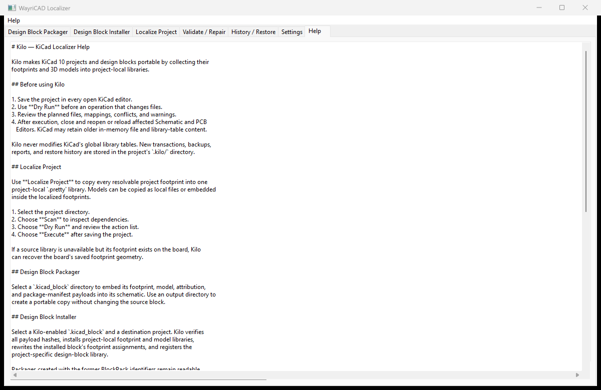

WayriCAD Kilo - KiCad Localizer
Kilo packages reusable design blocks and makes project footprint and 3D-model dependencies portable through previewed, reversible transactions.

Safe workflow
- Save and close affected KiCad editors.
- Select the project or design block.
- Run Scan, then Dry Run.
- Review dependency resolution, conflicts, planned writes, and warnings.
- Execute only the reviewed plan, then reopen affected editors.
Capabilities
- Design Block Packager: packages block schematics with footprint, model, attribution, and integrity metadata.
- Design Block Installer: verifies payload hashes, installs project-local libraries, and registers the block.
- Localize Project: collects resolvable assets into reversible project-local libraries.
- Validate / Repair: audits links, models, tables, transactions, and installed package hashes before offering repairs.
- History / Restore: supports links-only and guarded original-file restoration.
Command line
kilo --help
kilo scan-project <project>
kilo localize-project <project> --dry-run
kilo validate-project <project>
kilo package-block <block.kicad_block> --dry-run
Troubleshooting
Use Export Log and keep the project .kilo/backups, .kilo/reports, and transaction manifests. Missing assets remain unresolved rather than being silently substituted.
Do not execute against files still open with unsaved edits. An editor can overwrite on-disk changes when it later saves its older in-memory state.